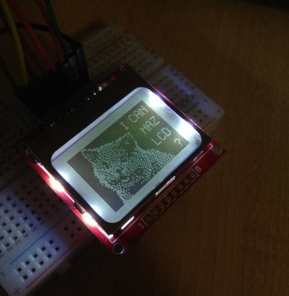
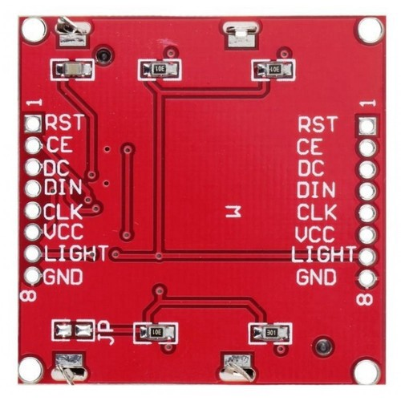
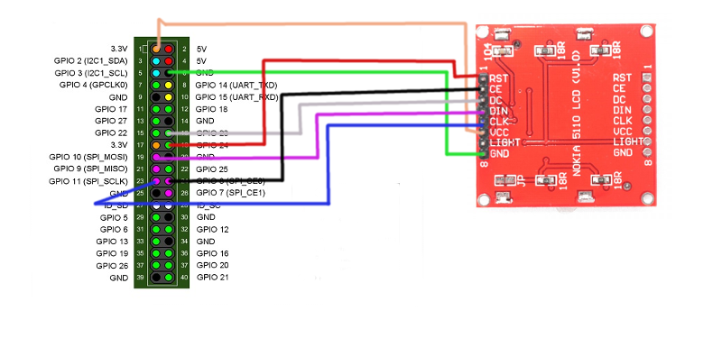

Raspberry Pi + Nokia 5110 LCD = ❤

Nokia 5110 LCD — это монохромный дисплей 84x48 пикселей, который использовался в старых телефонах Nokia. Основное преимущество этого дисплея — легкость в управлении.
На плате модуля дисплея расположены два параллельных ряда по 8 пинов для подключения и передачи данных:
- RST — Перезагрузка.
- CE — Выбор чипа.
- DC — Выбор режима.
- DIN — Вход данных.
- CLK — Вход тактового сигнала.
- VCC — Питание.
- LIGHT — Питание подсветки дисплея.
- GND — Земля.

Подключение данного дисплея к Raspberry Pi осуществляется очень просто, вот по этой схеме (чтобы при подключении дисплея работала его подсветка, нужно пин LIGHT подключить на землю):

Дальше для взаимодействия с дисплеем на Raspberry Pi нужно установить нужные библиотеки (предполагается что такие вещи как git, python-pip, python-dev, build-essential у вас уже установлены, если нет, то их тоже нужно установить):
sudo apt install python-imaging pip install RPi.GPIO
Так как взаимодействие с модулем экрана осуществляется по SPI, его так же нужно включить на Raspberry Pi. Для этого открываем файл "/boot/config.txt" и раскомментируем в нем строку:
dtparam=spi=on
После этого сохраняем файл и перезагружаемся командой:
sudo reboot
Чтобы проверить что SPI включено, можно воспользоваться командой:
lsmod | grep "spi_bcm*"
Дальше скачиваем и устанавливаем библиотеку для взаимодействия с дисплеем Nokia 5110:
git clone https://github.com/adafruit/Adafruit_Nokia_LCD
cd Adafruit_Nokia_LCD
sudo python setup.py install
Чтобы проверить то что дисплей правильно подключен и все работает, можно запустить один из примеров, из папки “AdafruitNokiaLCD/examples/”.
А теперь попробуем написать простенькие часы для этого дисплея:
#!/usr/bin/python import time from datetime import datetime import Adafruit_Nokia_LCD as LCD import Adafruit_GPIO.SPI as SPI from PIL import Image from PIL import ImageDraw from PIL import ImageFont # Raspberry Pi hardware SPI config: DC = 23 RST = 24 SPI_PORT = 0 SPI_DEVICE = 0 # Hardware SPI usage: disp = LCD.PCD8544(DC, RST, spi=SPI.SpiDev(SPI_PORT, SPI_DEVICE, max_speed_hz=4000000)) # Software SPI usage (defaults to bit-bang SPI interface): #disp = LCD.PCD8544(DC, RST, SCLK, DIN, CS) # Initialize library. disp.begin(contrast=40) # Clear display. disp.clear() disp.display() # Create blank image for drawing. # Make sure to create image with mode '1' for 1-bit color. image = Image.new('1', (LCD.LCDWIDTH, LCD.LCDHEIGHT)) # Get drawing object to draw on image. draw = ImageDraw.Draw(image) print('Press Ctrl-C to quit.') while True: # Get current time strt = datetime.now().strftime('%H:%M:%S') # Draw a white filled box to clear the image. draw.rectangle((0,0,LCD.LCDWIDTH,LCD.LCDHEIGHT), outline=255, fill=255) # Alternatively load a TTF font. # Some nice fonts to try: http://www.dafont.com/bitmap.php font = ImageFont.truetype('game_over.ttf', 58) # Write some text. draw.text((0,0), strt, font=font) # Display image. disp.image(image) disp.display() time.sleep(1.0)
Запускается этот код командой:
sudo python clock.py
Демонстрация работы получившихся часов: